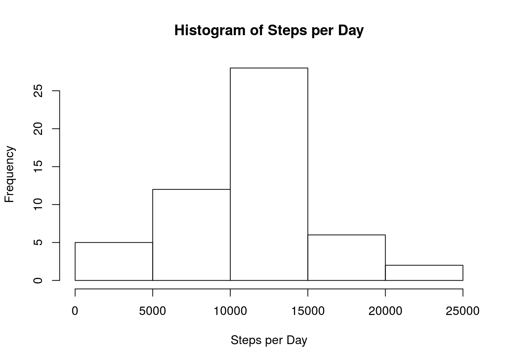
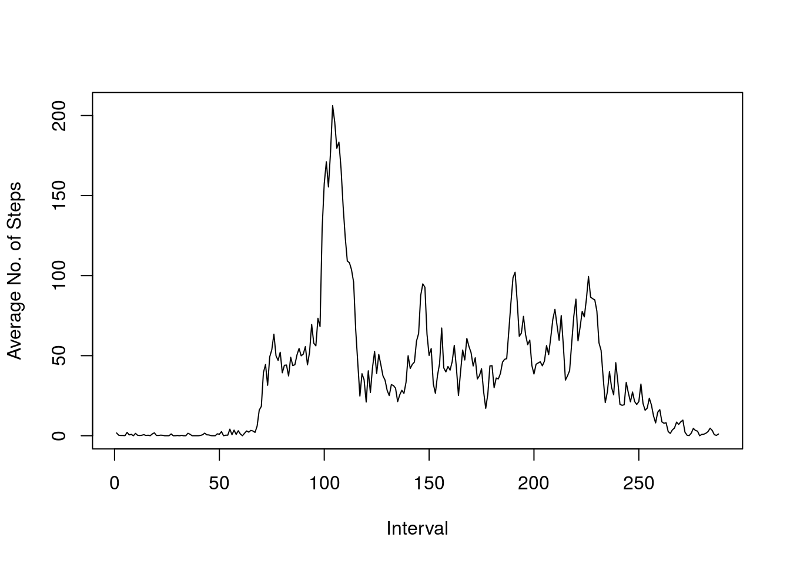
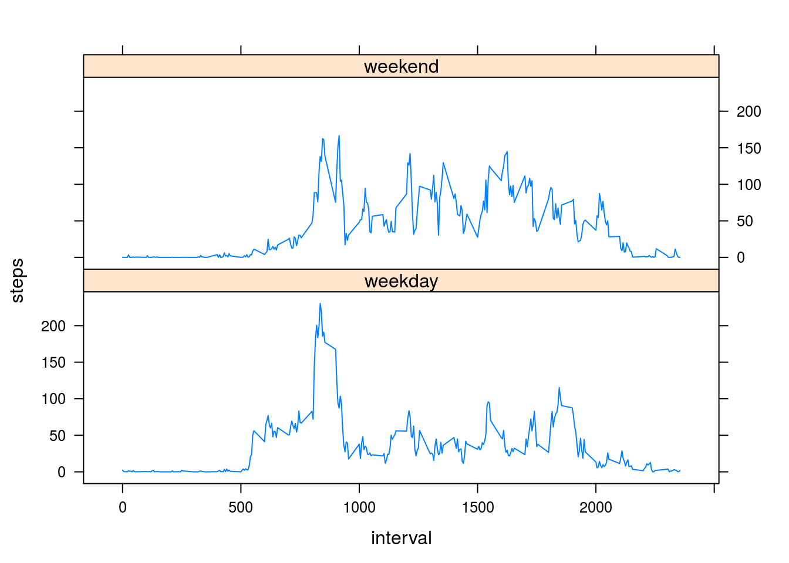

13/09/2015
Show any code that is needed to load the data (i.e. read.csv()) and process/transform the data (if necessary) into a format suitable for your analysis.
data_file <- "activity.csv"
activity <- read.csv(data_file, colClasses = c("date" = "Date"))For this part of the assignment, you can ignore the missing values in the dataset.
steps_per_day <- aggregate(steps ~ date, data = activity, FUN = sum, na.rm = TRUE)
hist(steps_per_day$steps, main ="Histogram of Steps per Day", xlab = "Steps per Day")
mn <- as.character(round(mean(steps_per_day$steps),2))
mdn <- as.character(round(median(steps_per_day$steps),2))The mean number of steps per day is 10766.19 and the median is 10765.
#avg_per_interval <- tapply(activity$steps, activity$interval, mean, na.rm=TRUE)
avg_per_interval <- aggregate(steps ~ interval, data = activity, FUN = mean, na.rm = TRUE)
plot(avg_per_interval$steps, type="l", xlab="Interval", ylab="Average No. of Steps")
max <- as.character(which.max(avg_per_interval$steps))
max## [1] "104"hour = as.character(round(as.integer(max)/12,2))The interval that contains the highest number of steps on average is 104 which is around 8.67 hours into the day.
Note that there are a number of days/intervals where there are missing values (coded as NA). The presence of missing days may introduce bias into some calculations or summaries of the data.
na_row_count = as.character(nrow(activity[which(is.na(activity$steps)),]))
# Take a copy of activity data frame
filled_activity = activity
# Fill in NA values of data frame with averages for that interval.
for(i in 1:nrow(filled_activity)){
if(is.na(filled_activity[i,1])){
interval = filled_activity[i, 3]
average_for_interval = avg_per_interval$steps[match(interval, avg_per_interval$interval)]
filled_activity[i,1] <- average_for_interval
}
}
# Recalculate Steps Per Day
steps_per_day <- aggregate(steps ~ date, data = activity, FUN = sum, na.rm = TRUE)
hist(steps_per_day$steps, main ="Histogram of Steps per Day", xlab = "Steps per Day")mn2 <- as.character(round(mean(steps_per_day$steps),2))
mdn2 <- as.character(round(median(steps_per_day$steps),2))The number of rows with NAs was 2304. These have been replaced with the average for the missing time interval.
The mean number of steps per day is 10766.19 and the median is 10765. Compared with mean of 10766.19 and median of 10765 from the original data set.
For this part the weekdays() function may be of some help here. Use the dataset with the filled-in missing values for this part.
# Create new 'week' vector
weekend = c()
for(i in 1:nrow(filled_activity)){
if(weekdays(filled_activity[i,2]) %in% c("Saturday", "Sunday")){
weekend[i] <- "weekend"
} else{
weekend[i] <- "weekday"
}
}
# Add 'week' vector to activity data frame as a factor
filled_activity$week <- as.factor(weekend)
avg_per_interval_week = aggregate(steps ~ interval + week, data = filled_activity, FUN = mean)
head(avg_per_interval_week)## interval week steps
## 1 0 weekday 2.25115304
## 2 5 weekday 0.44528302
## 3 10 weekday 0.17316562
## 4 15 weekday 0.19790356
## 5 20 weekday 0.09895178
## 6 25 weekday 1.59035639# Create Panel Plot with Lattice
library(lattice)
xyplot(steps ~ interval | week, data = avg_per_interval_week, type = "l", layout = c(1,2))